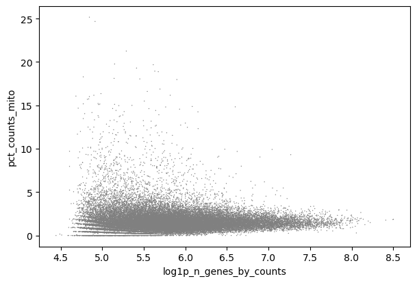

¿Cómo selecciono el umbral y los parámetros en mi análisis? ¿Cuál es un número “razonable”? ¿Colapsará el mundo si selecciono uno incorrecto?
Objetivos:
Interpretar gráficos con control de calidad para decidir los valores de los parámetros
Repetir el análisis desde una matriz hasta agrupamientos
Te proporcionamos un conjunto de datos experimentales de ratón de restricción en el crecimiento fetal Bacon et al. 2018. Este es el conjunto de datos generado a partir de este tutorial si usaste los ficheros FASTQ completos en vez de los reducidos (ver el estudio del Single Cell Expression Atlas aquí y todos los datos del proyecto aquí). Puedes encontrar estos datos en este historial de entrada o descargarlo del link a Zenodo que aparece más abajo.
Abre el manejador de carga de datos de Galaxy (galaxy-upload en la parte superior derecha del panel de herramientas)
Selecciona ‘Pegar/Traer datos’ Paste/Fetch Data
Copia los enlaces en el campo de textos
Presiona ‘Iniciar’ Start
Close Cierra la ventana.
Galaxy utiliza los URLs como nombres de forma predeterminada , así que los tendrás que cambiar a algunos que sean más útiles o informativos. the window
Cambiar nombregalaxy-pencil de los conjuntos de datos Mito-counted AnnData
Verificar que el tipo o formato de los datos es h5ad
Selecciona sobre el galaxy-pencilicono del lápiz para editar los atributos del conjunto de datos
Selecciona en la pestaña galaxy-chart-select-dataDatatypes en la parte superior del panel central
Es preferible usar la misma herramienta que usaste en el tutorial previo para examinar tu AnnData, porque ¡no es tan sencillo como examinar el conjunto de datos Anndata en el historial!
Práctica: Inspeccionando objetos AnnData
Inspect AnnDataTool: toolshed.g2.bx.psu.edu/repos/iuc/anndata_inspect/anndata_inspect/0.7.5+galaxy0 con los siguientes parámetros:
param-file“Annotated data matrix”: Mito-counted AnnData
“What to inspect?”: General information about the object
Inspect AnnDataTool: toolshed.g2.bx.psu.edu/repos/iuc/anndata_inspect/anndata_inspect/0.7.5+galaxy0 con los siguientes parámetros:
param-file“Annotated data matrix”: Mito-counted AnnData
“What to inspect?”: Key-indexed observations annotation (obs)
Inspect AnnDataTool: toolshed.g2.bx.psu.edu/repos/iuc/anndata_inspect/anndata_inspect/0.7.5+galaxy0 con los siguientes parámetros:
param-file“Annotated data matrix”: Mito-counted AnnData
“What to inspect?”: Key-indexed annotation of variables/features (var)
timeBuen consejo para ahorrar tiempo - ¡convierte los siguientes gráficos QC en un workflow así puedes ejecutarlos de nuevo fácilmente mientras analizas tus datos!
Creando los gráficos
Práctica: Haciendo gráficos QC
Plot with scanpyTool: toolshed.g2.bx.psu.edu/repos/iuc/scanpy_plot/scanpy_plot/1.7.1+galaxy0 con los siguientes parámetros:
param-file“Annotated data matrix”: Mito-counted AnnData
“Method used for plotting”: Generic: Violin plot, using 'pl.violin'
“Keys for accessing variables”: Subset of variables in 'adata.var_names' or fields of '.obs'
“Keys for accessing variables”: log1p_total_counts,log1p_n_genes_by_counts,pct_counts_mito
“The key of the observation grouping to consider”: genotype
Si deseas ver dos o más conjuntos de datos al mismo tiempo, puedes usar la función Scratchbook en Galaxy: 1. Haz clic en el icono Scratchbookgalaxy-scratchbook en la barra de menú superior. - Debería aparecer ver una pequeña marca de verificación en el icono 2. Vergalaxy-eye un conjunto de datos haciendo clic en el icono de ojo galaxy-eye para ver el resultado. - Deberías ver la salida en una ventana emergente sobre Galaxy - Puedes cambiar el tamaño de esta ventana arrastrando la esquina inferior derecha 3. Haz clic fuera del archivo para salir del Scratchbook 4. Vergalaxy-eye un segundo conjunto de datos de tu historial - Ahora deberías poder ver una segunda ventana con el nuevo conjunto de datos - Esto hace que sea más fácil comparar las dos salidas. 5. Repite estos pasos para todos los archivos que desees comparar. 6. Puedes desactivar Scratchbookgalaxy-scratchbook haciendo clic en el icono nuevamente.
Preguntas: Pregunta - Variación en lote
¿Existen diferencias en la profundidad de secuenciación a lo largo de las muestras?
¡El diagrama violin - batch - log tendrá todo lo que buscas!
Figura 1: Violin - lote - log (Datos crudos)
Teniendo en cuenta que está en escala logarítmica - lo que significa que pequeñas diferencias pueden significar grandes diferencias - la representación en forma de violín tiene probablemente un aspecto similar.
N707 y N703 podría presentar unos valores de conteo y de genes (o UMIs) un poco bajos, pero las diferencias no son catastróficas.
El pct_counts_mito se mantiene similar en los diferentes lotes, una buena señal.
Al igual que anteriormente, los diagramas violin - sex - log y violin - genotype - log tendrán lo que buscas.
Figura 2: Violin - sexo - log (Datos crudos)Figura 3: Violin - genotipo - log (Datos crudos)
No hay grandes diferencias en profundidad de secuenciación en los diferentes sexos diría yo - ¡aunque tú puedes no estar de acuerdo!
Sin embargo, en el gráfico Violin - genotype - log, podemos ver que hay una diferencia. Las muestras knockout tienen claramente menos genes y conteos. Desde el punto de vista experimental, ¿tiene esto sentido?
Ahora que hemos evaluado la diferencia en nuestras muestras, miraremos a las librerías en general para identificar los umbrales apropiados para nuestro análisis.
Cualquier diagrama con log1p_n_genes_by_counts funcionaría aquí en realidad. Algunas personas prefieren diagramas de dispersión frente a los diagramas de violín.
Figura 4: Dispersión - mito x genes (Datos crudos)
Puedes representar esto como n_counts y ver la misma tendencia alrededor de 300 genes, pero con estos datos el formato logarítmico es más claro, y así lo presentaremos.
Como anteriormente, ¡cualquier diagrama con log1p_n_total_counts funcionaría! De nuevo, usaremos un diagrama de dispersión aquí, ¡pero puedes usar un diagram de violín si quieres!
Figura 5: Gráfico de dispersión - mito x UMIs (Datos crudos)
Cualquier plot con pct_counts_mito funcionaría bien, sin embargo, los diagramas de dispersión son más fáciles de interpretar. Los usaremos igual que la última vez.
Figura 6: Gráfico de dispersión - mito x UMIs (Datos crudos)
Si estás trabajando en grupo, en este punto puedes tomar diversas direcciones, una con un control y el resto con variaciones en los números con las cuales puedas comparar los resultados a lo largo de los tutoriales.
Control
log1p_n_genes_by_counts > 5.7
log1p_total_counts > 6.3
pct_counts_mito < 4.5%
Todos los demás: ¡Seleccionen sus propios umbrales y comparen los resultados!
Scanpy FilterCellsTool: toolshed.g2.bx.psu.edu/repos/ebi-gxa/scanpy_filter_cells/scanpy_filter_cells/1.6.0+galaxy0 con los siguientes parámetros:
param-file“Input object in AnnData/Loom format”: Mito-counted AnnData
En “Parameters to select cells to keep”:
param-repeat“Insert Parameters to select cells to keep”
“Name of parameter to filter on”: log1p_n_genes_by_counts
“Min value”: 5.7
“Max value”: 20.0
Cambiar nombregalaxy-pencil de salida a Genes-filtered Object
Plot con scanpyTool: toolshed.g2.bx.psu.edu/repos/iuc/scanpy_plot/scanpy_plot/1.7.1+galaxy0 con los siguientes parámetros:
param-file“Annotated data matrix”: Genes-filtered Object
“Method used for plotting”: Generic: Violin plot, using 'pl.violin'
“Keys for accessing variables””: Subset of variables in 'adata.var_names' or fields of '.obs'
“Keys for accessing variables”: log1p_total_counts,log1p_n_genes_by_counts,pct_counts_mito
“he key of the observation grouping to consider”: genotype
Cambiar nombregalaxy-pencil de salida a Violin - Filterbygenes
Inspect AnnDataTool: toolshed.g2.bx.psu.edu/repos/iuc/anndata_inspect/anndata_inspect/0.7.5+galaxy0 con los siguientes parámetros:
param-file“Annotated data matrix”: Genes-filtered Object
“What to inspect??”: General information about the object
Cambiar nombregalaxy-pencil de salida a General - Filterbygenes
Nota que toolScanpy Filtercells te permite poner param-repeat múltiples parámetros al mismo tiempo (ejm. los filtros log1p_total_counts, log1p_n_genes_by_counts,y pct_counts_mito) en el mismo paso. La única razón por la que no estamos haciendo eso aquí es para que puedas ver lo que cada filtro logra. Como tal, examina tu plot y la información general.
Ahora pueden trabajar en equipos y hacer distintos análisis, un equipo optando por un control y el resto variando números de tal forma que puedan comparar resultados a lo largo de los tutoriales.
Variable: n_cells
Control > 3
Todos los demás: ¡Escojan sus propios umbrales y comparen resultados! Noten que si dan valores menores a 3 (o si omiten este paso por completo), es muy posible que las herramientas que utilizaremos posteriormente no funcionen debido a la falta de datos de genes.
Práctica: Filtrado de genes
Scanpy FilterGenesTool: toolshed.g2.bx.psu.edu/repos/ebi-gxa/scanpy_filter_genes/scanpy_filter_genes/1.6.0+galaxy0 con los siguientes parámetros:
param-file“Input object in AnnData/Loom format”: Mito-filtered Object
En “Parameters to select genes to keep”:
param-repeat“Insert Parameters to select genes to keep”
“Name of parameter to filter on”: n_cells
“Min value”: 3
“Max value”: 1000000000
Cambiar nombregalaxy-pencil de salida a Filtered Object
Inspect AnnDataTool: toolshed.g2.bx.psu.edu/repos/iuc/anndata_inspect/anndata_inspect/0.7.5+galaxy0 con los siguientes parámetros:
param-file“Matriz anotada de datos”: Filtered Object
Scanpy NormaliseDataTool: toolshed.g2.bx.psu.edu/repos/ebi-gxa/scanpy_normalise_data/scanpy_normalise_data/1.6.0+galaxy0 con los siguientes parámetros:
param-file“Input object in AnnData/Loom format”: Filtered Object
Scanpy FindVariableGenesTool: toolshed.g2.bx.psu.edu/repos/ebi-gxa/scanpy_find_variable_genes/scanpy_find_variable_genes/1.6.0+galaxy0 con los siguientes parámetros:
param-file“Input object in AnnData/Loom format”: output_h5ad (salida de Scanpy NormaliseDatatool)
“Flavor of computing normalised dispersion”: Seurat
Podemos ver que en realidad no existe mucha variación que pueda ser explicada una vez que pasamos del componente 19. Así es que nos ahorraremos un buen de tiempo y datos confusos si nos enfocamos en los primeros 20 CPs.
Si estás trabajando en grupos ahora pueden dividir el trabajo, unos pueden trabajar con un control y el resto trabajar con distintos números para que puedan comparar sus resultados posteriormente por lo que resta del tutorial.
Control
Number of PCs to use = 20
Maximum number of neighbours used = 15
Todos los demás: Utiliza el gráfico de varianza de CP para seleccionar tu propio número de CP y selecciona tu propio número máximo de vecinos a utilizar.
Práctica: Cómputo de gráfico - ComputeGraph
Scanpy ComputeGraphTool: toolshed.g2.bx.psu.edu/repos/ebi-gxa/scanpy_compute_graph/scanpy_compute_graph/1.6.0+galaxy4 utilizando los siguientes parámetros:
param-file“Input object in AnnData/Loom format”: output_h5ad (salida de Scanpy RunPCAtool)
“Use programme defaults”: history-shareNo
“Maximum number of neighbours used”: 15
“Number of PCs to use”: 20
Visualización de la reducción de dimensionalidades
Dos visualizaciones importantes en estos datos son tSNE y UMAP. Debemos calcular las coordenadas para ambos antes de la visualización. Para tSNE, el parámetro perplexity puede ser cambiado de tal manera que represente de mejor forma a los datos, mientras que para UMAP el cambio principal sería el modificar en sí mismo el gráfico kNN, por medio del cambio de neighbours (vecinos).
Si estás trabajando en grupos ahora pueden dividir el trabajo, unos pueden trabajar con un control y el resto trabajar con distintos números para que posteriormente puedan comparar sus resultados por lo que resta del tutorial.
Control
Perplejidad = 30
Todos los demás: Seleccionen su propia perplejidad, ¡entre 5 y 50!
Práctica: Cálculo de tSNE y UMAP
Scanpy RunTSNETool: toolshed.g2.bx.psu.edu/repos/ebi-gxa/scanpy_run_tsne/scanpy_run_tsne/1.6.0+galaxy2 utilizando los siguientes parámetros:
param-file“Input object in AnnData/Loom format”: output_h5ad (salida de Scanpy ComputeGraphtool)
“Use programme defaults”: history-shareNo
“The perplexity is related to the number of nearest neighbours, select a value between 5 and 50”: 30
Scanpy RunUMAPTool: toolshed.g2.bx.psu.edu/repos/ebi-gxa/scanpy_run_umap/scanpy_run_umap/1.6.0+galaxy1 utilizando los siguientes parámetros:
param-file“Input object in AnnData/Loom format”: output_h5ad (salida de Scanpy RunTSNEtool)
“Use programme defaults”: history-shareYes
congratulations ¡Felicitaciones! Has preparado tu objeto y creado las coordenadas de la vecindad. ¡Ahora podemos utilizarlos para ver algunos clusters!
Scanpy FindMarkersTool: toolshed.g2.bx.psu.edu/repos/ebi-gxa/scanpy_find_markers/scanpy_find_markers/1.6.0+galaxy3 con los siguientes parámetros:
param-file“Input object in AnnData/Loom format”: output_h5ad (salida de Scanpy FindClusterstool)
“Use programme defaults”: history-shareNo <— Confía en mí, hay un fallo extraño en algunas versiones de la herramienta que se soluciona simplemente marcando No aquí >
Cambiar nombregalaxy-pencil tabla de salida (not h5ad) Markers - cluster
Cambiar nombregalaxy-pencil del documento de salida h5ad Final object
Scanpy FindMarkersTool: toolshed.g2.bx.psu.edu/repos/ebi-gxa/scanpy_find_markers/scanpy_find_markers/1.6.0+galaxy4 con los siguientes parámetros:
param-file“Input object in AnnData/Loom format”: Final object
“The sample grouping/clustering to use”: genotype
“Use programme defaults”: history-shareNo
Cambiar nombregalaxy-pencil de la tabla de salida (no h5ad) a Markers - genotype
No Cambiar el nombre del objeto de salida AnnData (de hecho, puedes eliminarlo). Tienes la tabla de marcadores de genotipo para disfrutarla, pero queremos mantener las comparaciones de agrupamiento, en lugar de las comparaciones de genes, almacenadas en el objeto AnnData para más tarde.
Ahora, hay un pequeño problema aquí, y es que cuando inspeccionas la tabla de salida de marcadores, no verás nombres de genes, sino que verás los IDs de Ensembl. Aunque esta es una forma más precisa de hacerlo desde el punto de vista bioinformático (¡cada ID no tiene un nombre de gen!), es probable que queramos ver los nombres de los genes más reconocidos ¡así que introduzcamos algo de esa información!
Práctica: Añadir los nombres de los genes
Inspect AnnDataTool: toolshed.g2.bx.psu.edu/repos/iuc/anndata_inspect/anndata_inspect/0.7.5+galaxy0 con los siguientes parámetros:
param-file“Annotated data matrix”: Final object
“What to inspect?”: Key-indexed annotation of variables/features (var)
Esto proporciona a nuestra tabla todos los posibles genes con sus nombres.
Join two Datasets side by side on a specified fieldTool: join1 con los siguientes parámetros:
Scanpy PlotEmbedTool: toolshed.g2.bx.psu.edu/repos/ebi-gxa/scanpy_plot_embed/scanpy_plot_embed/1.6.0+galaxy0 con los siguientes parámetros:
param-file“Input object in AnnData/Loom format”: Final object
“name of the embedding to plot”: pca
“color by attributes, comma separated texts”: louvain,sex,batch,genotype,Il2ra,Cd8b1,Cd8a,Cd4,Itm2a,Aif1,Hba-a1,log1p_total_counts
“Field for gene symbols”: Symbol
timePuedes volver a ejecutar galaxy-refresh la misma herramienta de nuevo, pero cambia pcapor tsney finalmente por umap para saltarte los dos pasos siguientes.
Scanpy PlotEmbedTool: toolshed.g2.bx.psu.edu/repos/ebi-gxa/scanpy_plot_embed/scanpy_plot_embed/1.6.0+galaxy0 con los siguientes parámetros:
param-file“Input object in AnnData/Loom format”: Final object
“name of the embedding to plot”: tsne
“color by attributes, comma separated texts”: louvain,sex,batch,genotype,Il2ra,Cd8b1,Cd8a,Cd4,Itm2a,Aif1,Hba-a1,log1p_total_counts
“Field for gene symbols”: Symbol
Scanpy PlotEmbedTool: toolshed.g2.bx.psu.edu/repos/ebi-gxa/scanpy_plot_embed/scanpy_plot_embed/1.6.0+galaxy0 con los siguientes parámetros:
param-file“Input object in AnnData/Loom format”: Final object
“name of the embedding to plot”: umap
“color by attributes, comma separated texts”: louvain,sex,batch,genotype,Il2ra,Cd8b1,Cd8a,Cd4,Itm2a,Aif1,Hba-a1,log1p_total_counts
“Field for gene symbols”: Symbol
congratulations ¡Enhorabuena! ¡Ahora tienes un sinfín de gráficos!
Manipulate AnnDataTool: toolshed.g2.bx.psu.edu/repos/iuc/anndata_manipulate/anndata_manipulate/0.7.5+galaxy0 con los siguientes parámetros:
param-file“Annotated data matrix”: Final object
“Function to manipulate the object”: Rename categories of annotation
“Key for observations or variables annotation”: louvain
“Comma-separated list of new categories”: DP-M1,DP-M2,T-mat,DN,DP-M3,DP-L,DP-M4,RBC,Macrophages
Un momento… Lamentablemente esto elimina la numeración original de las agrupaciones. En caso de que quieras recuperarla, se puede volver a añadir la anotación.
AnnData OperationsTool: toolshed.g2.bx.psu.edu/repos/ebi-gxa/anndata_ops/anndata_ops/1.6.0+galaxy1 con los siguientes parámetros:
param-file“Input object in hdf5 AnnData format”: Final object
“Copy observations (such as clusters)”: history-shareYes
“Keys from obs to copy”
“Keys from obs to copy”
“Key contains”: louvain
param-file“AnnData objects with obs to copy”: (output of Manipulate AnnDatatool)
Observamos que la única muestra femenina -desgraciadamente, una de las tres muestras knockout- parece estar distribuida en las mismas zonas que las muestras knockout en general, por lo que, afortunadamente, no parece ser un factor de confusión y podemos seguir aprendiendo de nuestros datos. Lo ideal sería volver a realizar este experimento con más muestras de hembras o sustituir esta muestra de hembras por la de machos.
¿Consideras que la agrupación es adecuada? es decir, ¿hay agrupaciones individuales que crees que deberían estar separadas, y agrupaciones múltiples que podrían combinarse?
detailsHay una vista de resultados de la herramienta interactiva disponible, haz clic aquí para mostrarla <—- ¡Haz clic ahí!
A veces este enlace puede perturbar un cortafuegos o algo similar. Debería funcionar para ir al sitio web. Se te pedirá que “nombres tu anotación”, así que ¡hazlo para empezar a divertirte!
Estás advertido: esta herramienta de visualización es una poderosa opción para explorar tus datos, pero lleva algún tiempo acostumbrarse a ella. ¡Considera la posibilidad de explorarlo como tu propio tutorial para otro día!
Cualquiera en este servidor Galaxy podrá ver tu historial en el menú Datos compartidos
Comparte solo con otro usuario.
Haz clic en el botón Compartir con un usuario en la parte inferior
Ingresa una dirección de correo electrónico del usuario con el que deseas compartir
Tu historial se compartirá solo con este usuario.
Encontrar historiales que otros han compartido conmigo
Haz clic en el menú Usuario en la barra superior
Selecciona Historiales compartidos conmigo
Aquí verás todos los historiales que otros han compartido contigo directamente ** Nota: ** Si deseas realizar cambios en tu historial sin afectar la versión compartida, crea una copia mediante al ícono galaxy-gearOpciones de historial en tu historial y haciendo clic en Copiar
El análisis es más subjetivo de lo que podríamos pensar y tanto comprender biológicamente las muestras como iterar sobre el análisis es importante para obtener conocimientos biológicos reales.
Further information, including links to documentation and original publications, regarding the tools, analysis techniques and the interpretation of results described in this tutorial can be found here.
Referencias
Trapnell, C., D. Cacchiarelli, J. Grimsby, P. Pokharel, S. Li et al., 2014 The dynamics and regulators of cell fate decisions are revealed by pseudotemporal ordering of single cells. Nature Biotechnology 32: 381–386. 10.1038/nbt.2859
Satija, R., J. A. Farrell, D. Gennert, A. F. Schier, and A. Regev, 2015 Spatial reconstruction of single-cell gene expression data. Nature Biotechnology 33: 495–502. 10.1038/nbt.3192
McCarthy, D. J., K. R. Campbell, A. T. L. Lun, and Q. F. Wills, 2017 Scater: pre-processing, quality control, normalization and visualization of single-cell RNA-seq data in R. Bioinformatics btw777. 10.1093/bioinformatics/btw777
Bacon, W. A., R. S. Hamilton, Z. Yu, J. Kieckbusch, D. Hawkes et al., 2018 Single-Cell Analysis Identifies Thymic Maturation Delay in Growth-Restricted Neonatal Mice. Frontiers in Immunology 9: 10.3389/fimmu.2018.02523
Wolf, F. A., P. Angerer, and F. J. Theis, 2018 SCANPY: large-scale single-cell gene expression data analysis. Genome Biology 19: 10.1186/s13059-017-1382-0
Cakir, B., M. Prete, N. Huang, S. van Dongen, P. Pir et al., 2020 Comparison of visualization tools for single-cell RNAseq data. NAR Genomics and Bioinformatics 2: 10.1093/nargab/lqaa052
Hiltemann, Saskia, Rasche, Helena et al., 2023 Galaxy Training: A Powerful Framework for Teaching! PLOS Computational Biology 10.1371/journal.pcbi.1010752
Batut et al., 2018 Community-Driven Data Analysis Training for Biology Cell Systems 10.1016/j.cels.2018.05.012
Preguntas: